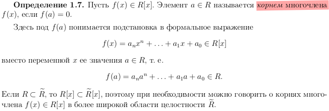

Алгебра. Подготвка к экзамену.
Table of Contents
- 1. «Алгебра, часть II»
- 1.1. 1.Кольцо многочленов R[x] над областью целостности R. Теорема Безу. Теорема о числе корней многочлена. Формулы Виета.
- 1.2. 2. Алгебраическое и функциональное равенство многочленов. Интерполяционная формула Лагранжа.
- 1.3. 3. Кольцо многочленов F[x] над полем F. Деление с остатком. Наибольший общий делитель многочленов.
- 1.4. 4. Алгоритм Евклида. Линейная форма наибольшего общего делителя многочленов.
- 1.5. 2. Взаимно простые многочлены и их свойства. Наименьшее общее кратное многочленов.
- 1.6. 3. Неприводимые многочлены над полем. Теорема о факторизации.
- 1.7. 4. Многочлены над C и R. Основная теорема алгебры многочленов и её следствия. Многочлены над Q. Критерий Эйзенштейна неприводимости многочлена над Q.
- 1.8. 5. Векторное пространство над полем скаляров. Подпространство, характеристический признак подпространства.
- 1.9. 9. Линейная зависимость векторов. Базис и ранг конечной системы векторов.
- 1.10. 10. Базис векторного пространства. Конечномерные векторные пространства.
- 1.11. 11. Координаты вектора в базисе. Матрица перехода от одного базиса к другому. Связь между координатами вектора в разных базисах.
- 1.12. 12. Линейная оболочка системы векторов. Суммы подпространств.
- 1.13. 13. Скалярное произведение в вещественном векторном пространстве. Ортогональные векторы. Линейная независимость ортогональной системы ненулевых векторов.
- 1.14. 14. Евклидово пространство. Матрица Грама скалярного произведения в базисе и её изменение при переходе к другому базису.
- 1.15. 15. Ортогональные и ортонормированные базисы в евклидовом пространстве. Процесс ортогонализации Грамма—Шмидта.
- 1.16. 16. Длина вектора, угол между векторами, угол между вектором и подпространством, объём параллелепипеда в евклидовом пространстве.
- 1.17. 17. Линейный оператор в векторном пространстве. Матрица линейного оператора в данном базисе и её изменение при переходе к другому базису.
- 1.18. 18. Ядро и образ линейного отображения. Невырожденные линейные операторы.
- 1.19. 19. Собственные значения и собственные векторы линейного оператора. Характеристический многочлен линейного оператора.
- 1.20. 20. Линейная независимость собственных векторов, принадлежащих попарно различным собственным значениям.
- 1.21. 21. Диагонализируемые линейные операторы. Теорема о диагонализируемости линейного оператора с простым спектром. Критерий диагонализируемости.
- 1.22. TODO 22. Квадратичные формы. Приведение квадратичной формы к сумме квадратов с коэффициентами методом Лагранжа.
- 2. «Алгебра, часть II»
- 2.1. 1
- 2.2. Алгебраическое и функциональное равенство многочленов. Интерполяционная формула Лагранжа.
- 2.3. Кольцо многочленов F[x] над полем F. Деление с остатком. Наибольший общий делитель многочленов.
- 2.4. Алгоритм Евклида. Линейная форма наибольшего общего делителя многочленов.
- 2.5. Взаимно простые многочлены и их свойства. Наименьшее общее кратное многочленов.
- 2.6. Неприводимые многочлены над полем. Теорема о факторизации.
- 2.7. Многочлены над C и R. Основная теорема алгебры многочленов и её следствия. Многочлены над Q. Критерий Эйзенштейна неприводимости многочлена над Q.
- 2.8. Векторное пространство над полем скаляров. Подпространство, характеристический признак подпространства.
- 2.9. Линейная зависимость векторов. Базис и ранг конечной системы векторов.
- 2.10. Базис векторного пространства. Конечномерные векторные пространства.
- 2.11. Координаты вектора в базисе. Матрица перехода от одного базиса к другому. Связь между координатами вектора в разных базисах.
- 2.12. Линейная оболочка системы векторов. Суммы подпространств.
- 2.13. Скалярное произведение в вещественном векторном пространстве. Ортогональные векторы. Линейная независимость ортогональной системы ненулевых векторов.
- 2.14. Евклидово пространство. Матрица Грама скалярного произведения в базисе и её изменение при переходе к другому базису.
- 2.15. Ортогональные и ортонормированные базисы в евклидовом пространстве. Процесс ортогонализации Грамма—Шмидта.
- 2.16. Длина вектора, угол между векторами, угол между вектором и подпространством, объём параллелепипеда в евклидовом пространстве.
- 2.17. Линейный оператор в векторном пространстве. Матрица линейного оператора в данном базисе и её изменение при переходе к другому базису.
- 2.18. Ядро и образ линейного отображения. Невырожденные линейные операторы.
- 2.19. Собственные значения и собственные векторы линейного оператора. Характеристический многочлен линейного оператора.
- 2.20. Линейная независимость собственных векторов, принадлежащих попарно различным собственным значениям.
- 2.21. Диагонализируемые линейные операторы. Теорема о диагонализируемости линейного оператора с простым спектром. Критерий диагонализируемости.
- 2.22. Квадратичные формы. Приведение квадратичной формы к сумме квадратов с коэффициентами методом Лагранжа.
1 «Алгебра, часть II»
1.1 1.Кольцо многочленов R[x] над областью целостности R. Теорема Безу. Теорема о числе корней многочлена. Формулы Виета.
1.2 2. Алгебраическое и функциональное равенство многочленов. Интерполяционная формула Лагранжа.
1.3 3. Кольцо многочленов F[x] над полем F. Деление с остатком. Наибольший общий делитель многочленов.
1.7 4. Многочлены над C и R. Основная теорема алгебры многочленов и её следствия. Многочлены над Q. Критерий Эйзенштейна неприводимости многочлена над Q.
1.8 5. Векторное пространство над полем скаляров. Подпространство, характеристический признак подпространства.
1.11 11. Координаты вектора в базисе. Матрица перехода от одного базиса к другому. Связь между координатами вектора в разных базисах.
1.13 13. Скалярное произведение в вещественном векторном пространстве. Ортогональные векторы. Линейная независимость ортогональной системы ненулевых векторов.
1.14 14. Евклидово пространство. Матрица Грама скалярного произведения в базисе и её изменение при переходе к другому базису.
1.15 15. Ортогональные и ортонормированные базисы в евклидовом пространстве. Процесс ортогонализации Грамма—Шмидта.
1.16 16. Длина вектора, угол между векторами, угол между вектором и подпространством, объём параллелепипеда в евклидовом пространстве.
1.17 17. Линейный оператор в векторном пространстве. Матрица линейного оператора в данном базисе и её изменение при переходе к другому базису.
1.19 19. Собственные значения и собственные векторы линейного оператора. Характеристический многочлен линейного оператора.
1.20 20. Линейная независимость собственных векторов, принадлежащих попарно различным собственным значениям.
1.21 21. Диагонализируемые линейные операторы. Теорема о диагонализируемости линейного оператора с простым спектром. Критерий диагонализируемости.
1.22 TODO 22. Квадратичные формы. Приведение квадратичной формы к сумме квадратов с коэффициентами методом Лагранжа.
2 «Алгебра, часть II»
2.1 1
2.1.1 Кольцо многочленов R[x] над областью целостности R.
2.1.2 Теорема Безу.
2.1.3 Теорема о числе корней многочлена.

2.1.4 Формулы Виета.
Формулы Виета — формулы, связывающие коэффициенты многочлена и его корни.